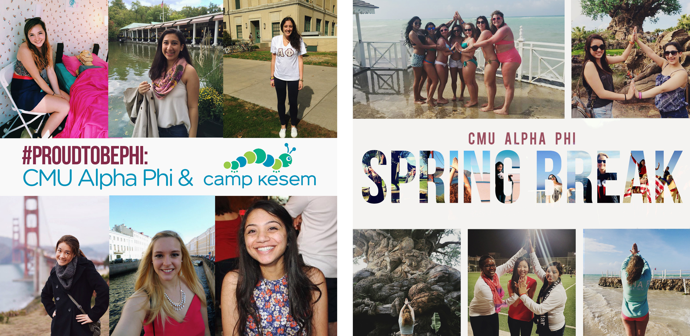

Currently, I serve as the director of social media and advertising for the Iota Sigma chapter of the Alpha Phi International Fraternity. For this position, I am responsible for presenting our chapter in the best possible light, highlighting achievements, participation in on-campus groups, and sisterhood on social media, primarily Facebook and Instagram.

I also help out with various events that the Iota Sigma chapters runs at Carnegie Mellon, with both management of the event and with poster designs and other images used on social media to promote the event. Every spring, we host a philanthropic event called "Alphatraz" where we get students from other organizations to be "prisoners" in our jail, and then have specific amounts of money that can be donated from others to make the prisoners do silly things. This year, we raised over $900 and donated all proceeds to the Alpha Phi Foundation for women's heart health. For this year's event, I was in charge of making the posters, Facebook cover photos, and photos of the "prisoners".